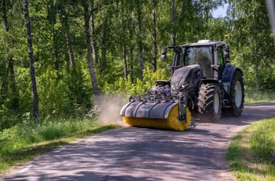

VÅRE TJENESTER
Massetransport
Vi transporterer jord, grus og annet massetransport for gårdsbruk og byggeprosjekter.

Brøyting og Strøing
Effektiv snørydding og strøing for sikre veier og gårdsplasser.

Vårkosting og Feiing
Vi fjerner vinterens sand og smuss for rene og trygge veier.
Tomterydding og Graving
Forberedelse av tomter for bygging, landskapsutforming og utgraving.

Veikanthogst og Beitepussing
Vedlikehold av beiteområder og fjerning av busker langs veier.

Nydyrking og Drenering
Optimalisering av jordbruksarealer for bedre avling og vannhåndtering.